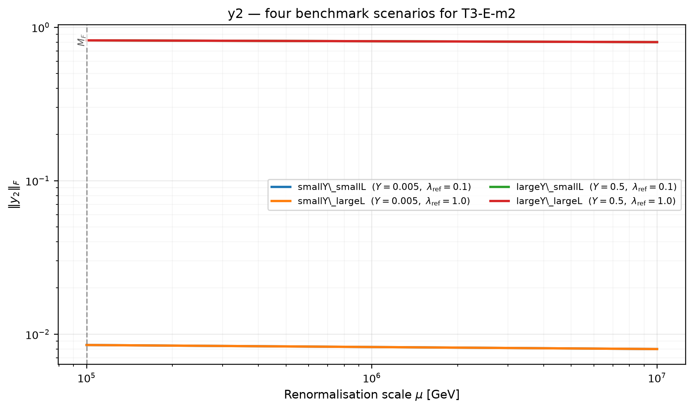
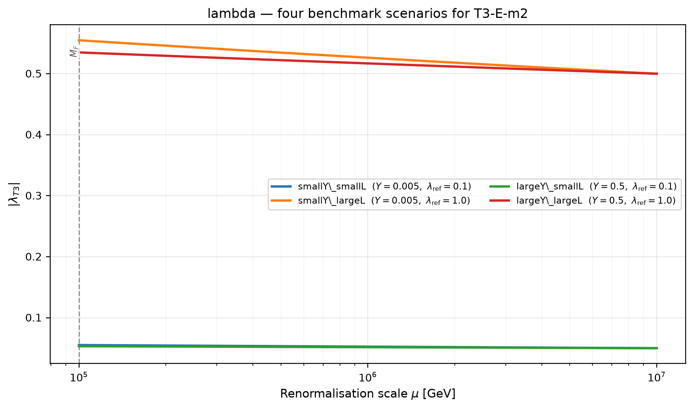
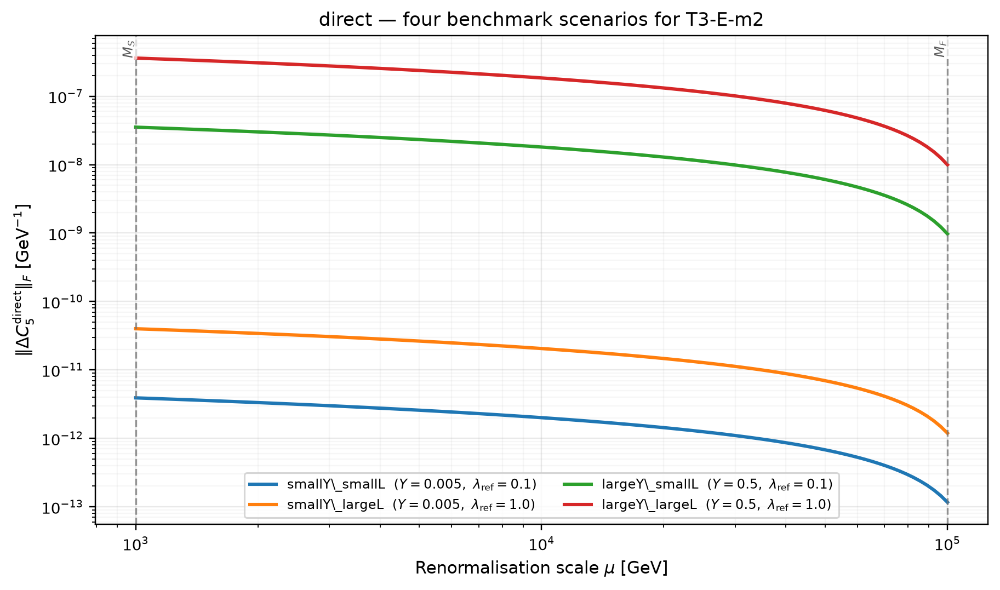
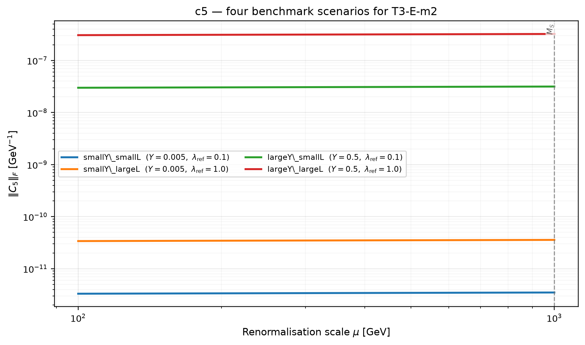
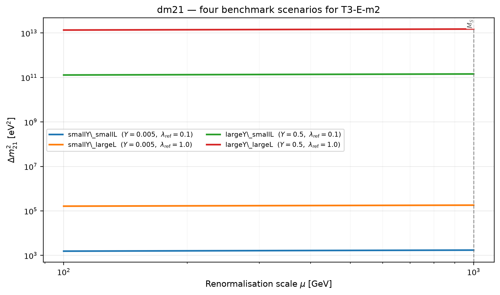
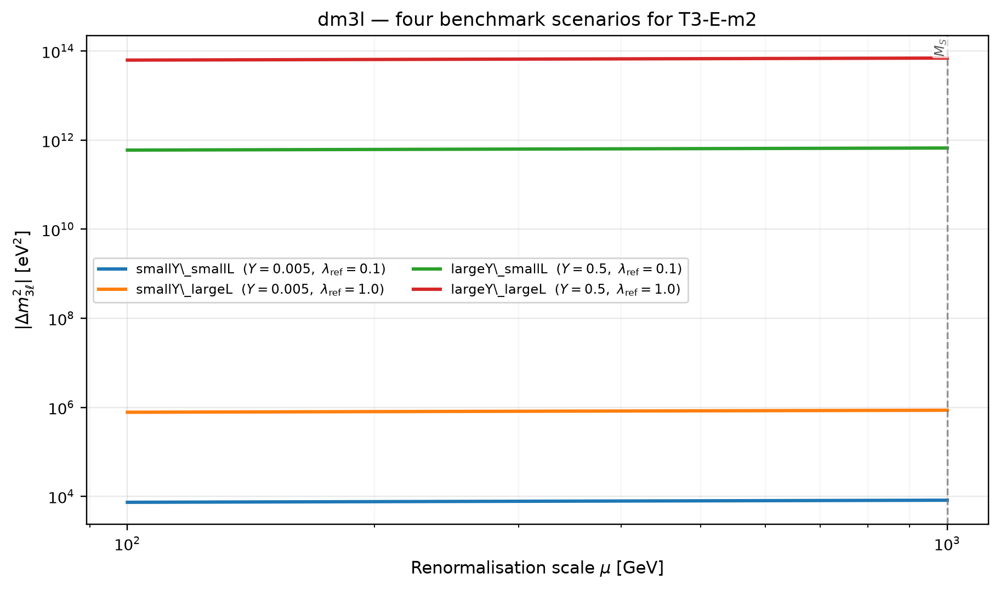
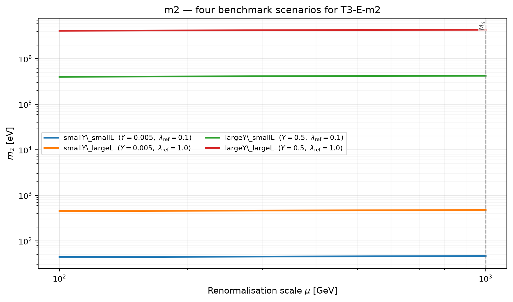
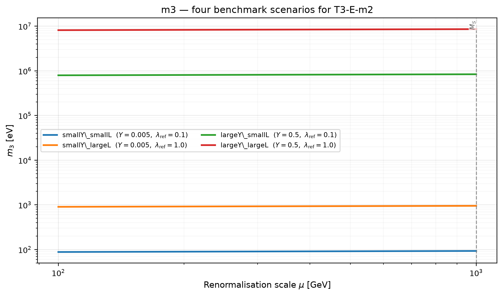
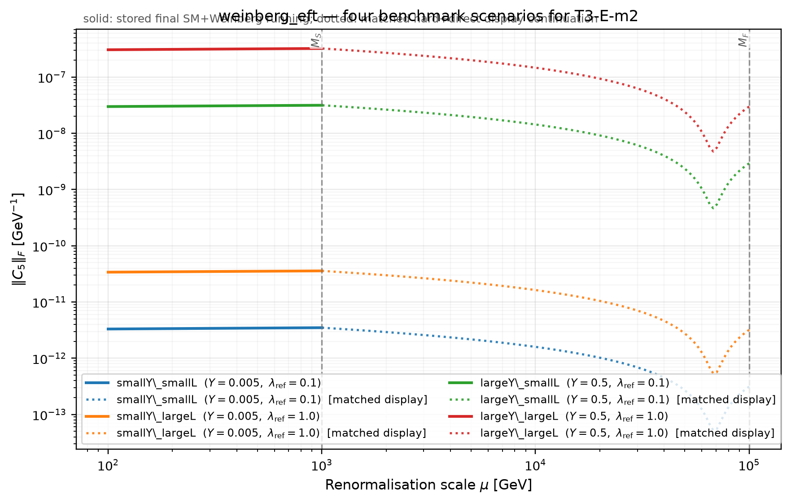
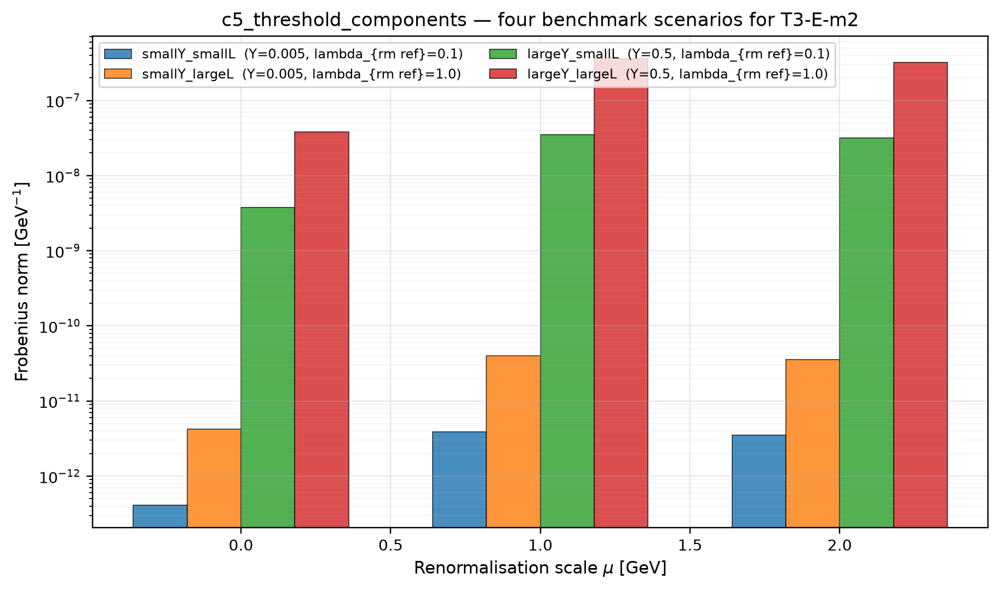

Four fixed benchmark scenarios from previously computed diagnostics. No physics recomputation.
Intermediate dotted Weinberg curves, when present, represent a validated threshold-anchored hard-plus-direct display reconstruction. They are not an intermediate-EFT Wilson coefficient. Actual direct LLSS-to-Weinberg contributions are shown separately. Class-E lambda values use the saved benchmark prescription, whose multiplicity justification remains under validation.
| Scenario | Reference couplings | Source diagnostics |
|---|---|---|
| smallY_smallL | smallY_smallL (Y=0.005, lambda_{rm ref}=0.1) | C:\thesistemp\T3neutrinomassmodelpipeline\output\full\comparison\smallY_smallL\T3_dS1_3_dS2_3_dF_2_alpha_m2\T3_E_alpha_m2\data\running_diagnostics.json |
| smallY_largeL | smallY_largeL (Y=0.005, lambda_{rm ref}=1.0) | C:\thesistemp\T3neutrinomassmodelpipeline\output\full\comparison\smallY_largeL\T3_dS1_3_dS2_3_dF_2_alpha_m2\T3_E_alpha_m2\data\running_diagnostics.json |
| largeY_smallL | largeY_smallL (Y=0.5, lambda_{rm ref}=0.1) | C:\thesistemp\T3neutrinomassmodelpipeline\output\full\comparison\largeY_smallL\T3_dS1_3_dS2_3_dF_2_alpha_m2\T3_E_alpha_m2\data\running_diagnostics.json |
| largeY_largeL | largeY_largeL (Y=0.5, lambda_{rm ref}=1.0) | C:\thesistemp\T3neutrinomassmodelpipeline\output\full\comparison\largeY_largeL\T3_dS1_3_dS2_3_dF_2_alpha_m2\T3_E_alpha_m2\data\running_diagnostics.json |
Open interactive four-scenario graph (quantity selector, scenario toggles, zoom, hover)
None









